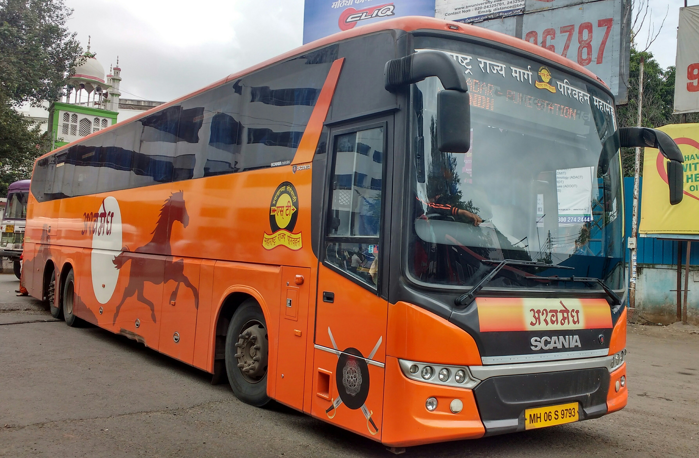

Know exactly where your train is, how late it is running and when it reaches your station.
Track every journey in real time.
Enter your ticket number to see the bus location.
Enter flight number to see departure, arrival and gate.
See which city or highway stop your bus has crossed.
Know if your bus or flight is running late before leaving home.
Get terminal and gate details for your flight.
Plan pick-ups using accurate arrival time.

Most operators share GPS location every few minutes.
Real-time departure and arrival updates for domestic flights.
Terms you will see while tracking.
| Term | Mode | Meaning |
|---|---|---|
| Boarding point | Bus | Place where you board the bus |
| Drop point | Bus | Stop where you get off |
| En route | Bus | The bus has started and is on the way |
| Scheduled / On time | Flight | Flight is expected as per the original timetable |
| Delayed | Flight | Departure or arrival is later than scheduled |
| Boarding | Flight | Gate is open, passengers are boarding |
| Departed / Landed | Flight | Flight has left or reached its destination |
See the last station crossed and the next upcoming stop.
Know how many minutes late the train is running.
See the platform your train is expected on.
Plan pick-ups for family and friends without waiting.
Type the train number or name.
View the last crossed station and delay.
Know the arrival time at your station.
Terms you will see while tracking.
| Term | Meaning |
|---|---|
| ETA | Expected time of arrival at a station |
| ETD | Expected time of departure from a station |
| Delay | Minutes the train is behind its scheduled time |
| Halt | Time the train stops at a station |
| Platform | Platform number the train is expected on |
| Distance | Kilometres covered from the starting station |
Track ETA and leave home when the train is 1 hour away.
Share live status with family so they can arrive on time.
Fog and monsoon can delay trains; check status often.
Status updates every few minutes, so check again before you leave.